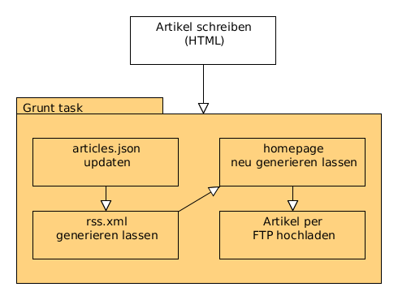

Wie Schlingel's Werkstatt funktionieren (soll)
Martin, 01.06.2014
Diese Website besteht ausschließlich aus HTML-Files und ein paar CSS Files. Im Moment wird die Frontseite auch noch mittels Javascript bevölkert aber auch das soll in Zukunft in einen Build-Prozess verschoben werden. Mein erster Ansatz war es die ganzen Artikel in Latex zu schreiben und dann das aus dem Latex generierten HTML den Inhalt heraus zu parsen und diesen in ein Website-Template einzupflanzen. Dieser Ansatz habe ich oobe (Oobe is a Offline Blog Engine) getauft.
Die Idee war nicht schlecht allerdings ist der Buildprozess mittels Ant, Latex, Shell-Skript und selbst gestricktem Ant-Task alles andere als einfach zu verstehen und leider auch fragil. Dementsprechend habe ich das dann nie weiter verfolgt. Warum auch in einer Markup-Sprache seine Artikel schreiben nur um sie dann doch in eine andere zu transformieren? Und das auch noch auf Kosten der Einfachheit beim Schreiben? IMHO ist HTML noch immer einfacher als Latex, als auf Dauer doch keine echte Option.
Dementsprechend began ich heute das ganze Geraffel in HTML umzuschreiben und mir den Bildprozess mit Node etwas zu vereinfachen. Im Moment funktioniert das ganze so:
- Ich schreibe meinen Artikel in HTML. Dazu nehme ich das Template-File her und setze die Werte ein.
- Ich füge den neuen Eintrag dem articles.json hinzu.
- Ich generiere in der Shell mit dem articles2rss-Skript ein rss.xml
- Ich lade händisch alle neuen Files per FTP hoch.
Das möchte ich alles noch weiter automatisieren und diese ganzen Tasks in Grunt gießen. Ziel ist es nur noch das HTML-File zu schreiben und dann einen Grunt-Task auszuführen damit das ganze so aussieht:
Ausstehende Arbeit
Was ist da noch zu tun? Nun, zum einen muss die Startseite immer wieder neu generiert werden. Vorzugsweise aus dem articles.json-File. Vorzugsweise muss ich das articles.json auch nicht mehr händisch pflegen sondern kann das ganze aus dem neu erstellten HTML-File heraus parsen. Die nötigen Informationen kann ich alle aus dem header-Element auslesen.
Aus dem erstellten articles.json heraus kann ich dann mittels handlebars eine hübsche Übersicht generieren lassen. Das rss.xml-File automatisch zu erstellen sollte ja kein Problem sein, da dies ja schon per Skript geschieht.
Auch das ganze per FTP hochzuladen funktioniert aus Grunt heraus. Damit kann ich dann - so wie gerade im Moment - immer mehr Text zu produzieren während ich prokrastiniere ohne mich um so nervige Infrastrukturarbeiten bemühen zu müssen.
Da es auch im alten Wordpress-Blog keine Kommentare gab, steht die Entscheidung noch aus ob ich dieses Feature per Javascript injecten werde. Ich mag Disqus nicht und ohne Not werde ich auch kein PHP-Skript einbauen. (Auch wenn es mit jskomment ein freies und vor allem einfaches System gäbe.)
Im Unterschied zu oobe sieht's nun ganz gut aus, dass ich das Projekt auch fertig stelle da es kein Meta-Projekt ist das fertig werden muss um diesen Blog zu pflegen sondern bereits als WIP-Projekt genutzt wird um ihn zu pflegen.